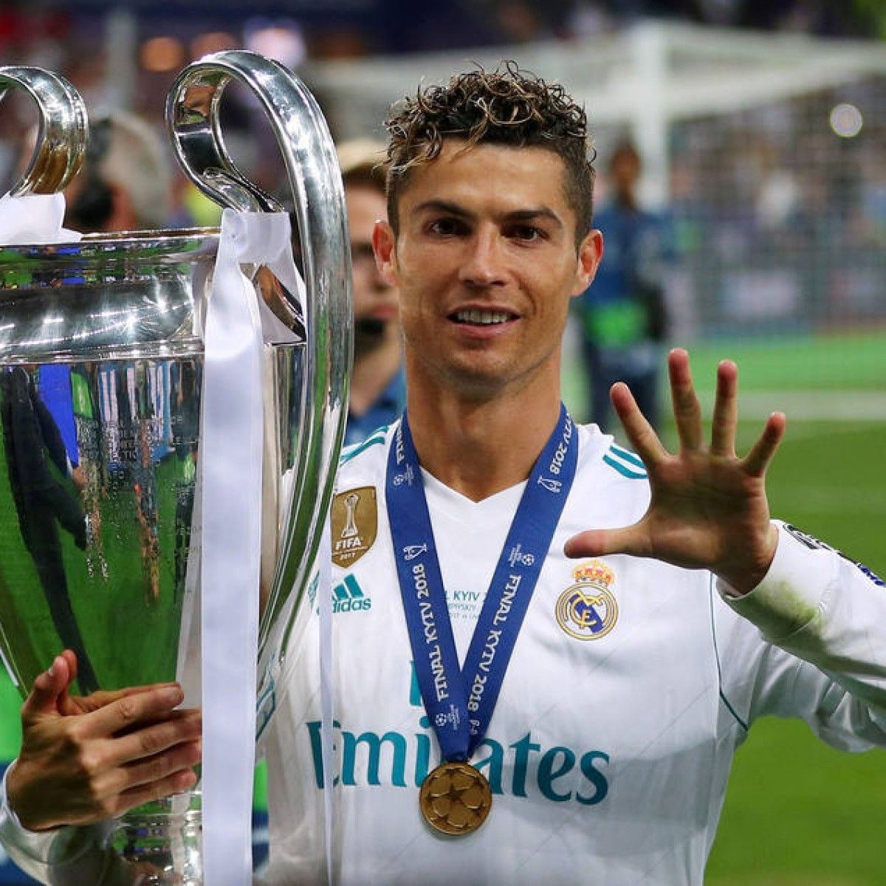

O Cristiano é meu idolo por fatores que vão além do esporte, ele é um exemplo de dedicação e trabalho duro, uma verdadeira maquina de vencer não a toa ainda está em atividade mesmo com 41 anos, segue uma rotina de saúde e autocuidado que serve de exemplo para qualquer pessoa. Entrando mais na área do futebol em si ele é responsável por eu me apaoixonar pelo esporte, seja pela sua liderança dentro e fora de campo ou pelo sue talento e habilidade de jogar futebol, minha infancia foi marcada pelos seus jogos inesqueciveis de liga dos campeões onde ele é o maior artilheiro e assistente da histótia da competição, sem falar em outros milhares de recordes que ele já quebrou. Não é nem um exagero eleger Cristiano como o maior atleta de todos os tempos, sua marca e seu impacto para a história do esporte é algo que será lembardo para sempre e eu terei o prazer de dizer aos meus filhos que eu vi o CR7 jogar.
